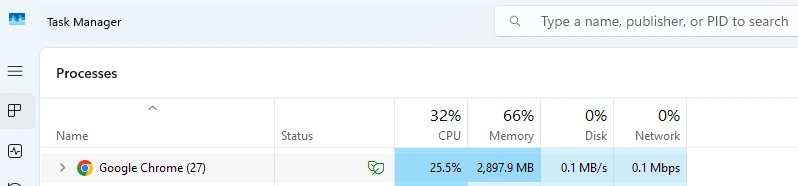

Quick answer
100% disk usage often comes from Windows Search indexing, SysMain, startup apps, low storage, antivirus scans, or an older HDD that cannot keep up. Start by checking whether the spike is temporary or constant.
Disk performance overview
If your laptop freezes, stutters, or becomes unusable while Task Manager shows 100% disk usage, the drive is likely the bottleneck. This page is the beginner-friendly overview: it helps you understand what the symptom means and which checks matter most before you move into more detailed troubleshooting.
For a full step-by-step Windows 11 fix, read our How To Fix 100% Disk Usage in Windows 11 guide.
Quick answer
100% disk usage often comes from Windows Search indexing, SysMain, startup apps, low storage, antivirus scans, or an older HDD that cannot keep up. Start by checking whether the spike is temporary or constant.
Meaning
High disk usage means the storage drive is handling as much work as it can. Windows can feel slow, frozen, or delayed because every app is waiting for the drive to finish the current backlog.
That is why a laptop can show modest CPU use but still behave terribly when disk usage is high.
Task Manager
Ctrl + Shift + Esc.
Common causes
Safe fixes
If you want the full fix order with more detail on SysMain, Windows Search, and permanent vs temporary changes, move next to How To Fix 100% Disk Usage in Windows 11.
Be careful
Avoid turning off random Windows services just because a forum post says so. Windows Search and SysMain can be worth testing carefully, but they should be treated as targeted troubleshooting steps, not blanket fixes for every laptop freezing disk usage complaint.
If Task Manager keeps pointing at SysMain specifically, the Service Host SysMain High Disk Usage guide walks through that exact scenario without assuming every disk spike needs the same fix.
It means the drive is fully busy handling read and write requests. When that happens, Windows can feel frozen even if CPU usage does not look high.
Yes. Older HDDs are much more likely to hit 100% usage during startup, updates, indexing, and multitasking because they are slower than SSDs.
Only treat those as troubleshooting steps, not permanent magic fixes. If one service is clearly causing disk spikes, test carefully rather than disabling random services blindly.
Yes. When free space is low, Windows has less room for updates, caches, temporary files, and normal disk housekeeping, which can make disk usage spikes worse.
Not always. Sometimes cleanup, fewer startup apps, or letting updates finish is enough. But if the laptop still uses a slow HDD, an SSD upgrade often makes the biggest difference.
When the drive is fully busy, apps have to wait to read files, save data, or load Windows components. That waiting shows up as lag, freezing, or programs that stop responding.